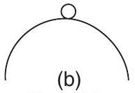
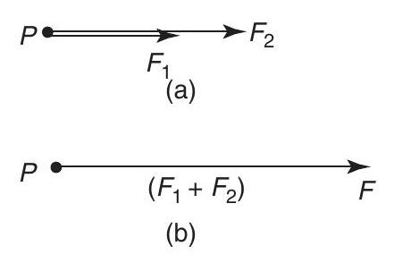

Mechanical science - Forces acting at a point
Forces acting at a point
At the end of this chapter you should be able to:
- distinguish between scalar and vector quantities
- define 'centre of gravity' of an object
- define 'equilibrium' of an object
- understand the terms 'coplanar' and 'concurrent'
- determine the resultant of two coplanar forces using
- (a) the triangle of forces method
- (b) the parallelogram of forces method
- calculate the resultant of two coplanar forces using
- (a) the cosine and sine rules
- (b) resolution of forces
- determine the resultant of more than two coplanar forces using
- (a) the polygon of forces method
- (b) calculation by resolution of forces
- determine unknown forces when three or more coplanar forces are in equilibrium
3.1 Scalar and vector quantities
Quantities used in engineering and science can be divided into two groups:
(a) Scalar quantities have a size (or magnitude) only and need no other information to specify them. Thus, 10 centimetres, 50 seconds, 7 litres and 3 kilograms are all examples of scalar quantities.
(b) Vector quantities have both a size or magnitude and a direction, called the line of action of the quantity. Thus, a velocity of 50 kilometres per hour due east, an acceleration of 9.81 metres per second squared vertically downwards and a force of 15 Newtons at an angle of 30 degrees are all examples of vector quantities.
3.2 Centre of gravity and equilibrium
The centre of gravity of an object is a point where the resultant gravitational force acting on the body may be taken to act. For objects of uniform thickness lying in a horizontal plane, the centre of gravity is vertically in line with the point of balance of the object. For a thin uniform rod the point of balance and hence the centre of gravity is halfway along the rod as shown in Figure 3.1(a).
Figure 3.1
A thin flat sheet of a material of uniform thickness is called a lamina and the centre of gravity of a rectangular lamina lies at the point of intersection of its diagonals, as shown in Figure 3.1(b). The centre of gravity of a circular lamina is at the centre of the circle, as shown in Figure 3.1(c).
An object is in equilibrium when the forces acting on the object are such that there is no tendency for the object to move. The state of equilibrium of an object can be divided into three groups.
(i) If an object is in stable equilibrium and it is slightly disturbed by pushing or pulling (i.e. a disturbing force is applied), the centre of gravity is raised and when the disturbing force is removed, the object returns to its original position. Thus a ball bearing in a hemispherical cup is in stable equilibrium, as shown in Figure 3.2(a).
(a)
Stable equilibrium
Unstable equilibrium
(c)
Neutral equilibrium
Figure 3.2
(ii) An object is in unstable equilibrium if, when a disturbing force is applied, the centre of gravity is lowered and the object moves away from its original position. Thus, a ball bearing balanced on top of a hemispherical cup is in unstable equilibrium, as shown in Figure 3.2(b).
(iii) When an object in neutral equilibrium has a disturbing force applied, the centre of gravity remains at the same height and the object does not move when the disturbing force is removed. Thus, a ball bearing on a flat horizontal surface is in neutral equilibrium, as shown in Figure 3.2(c).
3.3 Forces
When forces are all acting in the same plane, they are called coplanar. When forces act at the same time and at the same point, they are called concurrent forces.
Force is a vector quantity and thus has both a magnitude and a direction. A vector can be represented graphically by a line drawn to scale in the direction of the line of action of the force.
To distinguish between vector and scalar quantities, various ways are used. These include:
- bold print,
- two capital letters with an arrow above them to denote the sense of direction, e.g. $\overrightarrow{A B}$, where $A$ is the starting point and $B$ the end point of the vector,
- a line over the top of letters, e.g. $\overline{A B}$ or $\bar{a}$
- letters with an arrow above, e.g. $\vec{a}, \vec{A}$
- underlined letters, e.g. $\underline{a}$
- $x i+y j$, where $i$ and $j$ are axes at right-angles to each other; for example, $3 i+4 j$ means 3 units in the $i$ direction and 4 units in the $j$ direction, as shown in Figure 3.3
Figure 3.3
- a column matrix $\binom{a}{b}$; for example, the vector $\boldsymbol{O A}$ shown in Figure 3.3 could be represented by $\binom{3}{4}$
Thus, in Figure 3.3, $\boldsymbol{O A} \equiv \overrightarrow{O A} \equiv \overline{O A}$
The method adopted in this text is to denote vector quantities in bold print. Thus, $\boldsymbol{a} \boldsymbol{b}$ in Figure 3.4 represents a force of 5 Newton's acting in a direction due east.
Figure 3.4
3.4 The resultant of two coplanar forces
For two forces acting at a point, there are three possibilities.
(a) For forces acting in the same direction and having the same line of action, the single force having the same effect as both of the forces, called the resultant force or just the resultant, is the arithmetic sum of the separate forces. Forces of $F_{1}$ and $F_{2}$ acting at point $P$, as shown in Figure 3.5(a), have exactly the same effect on point $P$ as force $F$ shown in Figure 3.5(b), where $F=F_{1}+F_{2}$ and acts in the same direction as $F_{1}$ and $F_{2}$. Thus $F$ is the resultant of $F_{1}$ and $F_{2}$
Figure 3.5
(b) For forces acting in opposite directions along the same line of action, the resultant force is the arithmetic difference between the two forces. Forces of $F_{1}$ and $F_{2}$ acting at point $P$ as shown in Figure 3.6(a) have exactly the same effect on point $P$ as force $F$ shown in Figure 3.6(b), where $F=F_{2}-F_{1}$ and acts in the direction of $F_{2}$, since $F_{2}$ is greater than $F_{1}$. Thus $F$ is the resultant of $F_{1}$ and $F_{2}$
Figure 3.6
(c) When two forces do not have the same line of action, the magnitude and direction of the resultant force may be found by a procedure called vector addition of forces. There are two graphical methods of performing vector addition, known as the triangle of forces method (see Section 3.5) and the parallelogram of forces method (see Section 3.6)
Problem 1. Determine the resultant force of two forces of 5 kN and 8 kN , (a) acting in the same direction and having the same line of action, (b) acting in opposite directions but having the same line of action.
Figure 3.7
(a) The vector diagram of the two forces acting in the same direction is shown in Figure 3.7(a), which assumes that the line of action is horizontal, although since it is not specified, could be in any direction. From above, the resultant force $F$ is given by:
in the direction of the original forces.
(b) The vector diagram of the two forces acting in opposite directions is shown in Figure 3.7(b), again assuming that the line of action is in a horizontal direction. From above, the resultant force $F$ is given by:
in the direction of the 8 kN force.
3.5 Triangle of forces method
A simple procedure for the triangle of forces method of vector addition is as follows:
- Draw a vector representing one of the forces, using an appropriate scale and in the direction of its line of action.
- From the nose of this vector and using the same scale, draw a vector representing the second force in the direction of its line of action.
- The resultant vector is represented in both magnitude and direction by the vector drawn from the tail of the first vector to the nose of the second vector.
Problem 2. Determine the magnitude and direction of the resultant of a force of 15 N acting horizontally to the right and a force of 20 N , inclined at an angle of $60^{\circ}$ to the 15 N force. Use the triangle of forces method.
Using the procedure given above and with reference to Figure 3.8:
(i) $\boldsymbol{a b}$ is drawn 15 units long horizontally
Figure 3.8
(ii) From $b, \boldsymbol{b} \boldsymbol{c}$ is drawn 20 units long, inclined at an angle of $60^{\circ}$ to $a b$. (Note, in angular measure, an angle of $60^{\circ}$ from $a b$ means $60^{\circ}$ in an anticlockwise direction)
(iii) By measurement, the resultant $\boldsymbol{a c}$ is 30.5 units long inclined at an angle of $35^{\circ}$ to $a b$. That is, the resultant force is $\mathbf{30.5 ~ N}$, inclined at an angle of $\mathbf{35}^{\circ}$ to the 15 N force.
Problem 3. Find the magnitude and direction of the two forces given, using the triangle of forces method. First force: 1.5 kN acting at an angle of $30^{\circ}$. Second force: 3.7 kN acting at an angle of $-45^{\circ}$
Scale
Figure 3.9
From the above procedure and with reference to Figure 3.9:
(i) $\boldsymbol{a b}$ is drawn at an angle of $30^{\circ}$ and 1.5 units in length.
(ii) From $b, \boldsymbol{b} \boldsymbol{c}$ is drawn at an angle of $-45^{\circ}$ and 3.7 units in length. (Note, an angle of $-45^{\circ}$ means a clockwise rotation of $45^{\circ}$ from a line drawn horizontally to the right)
(iii) By measurement, the resultant ac is 4.3 units long at an angle of $-25^{\circ}$. That is, the resultant force is $\mathbf{4.3} \mathbf{~ k N}$ at an angle of $\mathbf{- 2 5}^{\circ}$
Now try the following exercise
Exercise 12 Further problems on the triangle of forces method
In questions 1 to 5, use the triangle of forces method to determine the magnitude and direction of the resultant of the forces given.
- 1.3 kN and 2.7 kN , having the same line of action and acting in the same direction. [ 4.0 kN in the direction of the forces]
- 470 N and 538 N having the same line of action but acting in opposite directions. [68 N in the direction of the 538 N force]
- 13 N at $0^{\circ}$ and 25 N at $30^{\circ}$ [36.8 N at $20^{\circ}$ ]
- 5 N at $60^{\circ}$ and 8 N at $90^{\circ}$ [12.6 N at $79^{\circ}$ ]
- 1.3 kN at $45^{\circ}$ and 2.8 kN at $-30^{\circ}$ [ 3.4 kN at $-8^{\circ}$ ]
3.6 The parallelogram of forces method
A simple procedure for the parallelogram of forces method of vector addition is as follows:
- Draw a vector representing one of the forces, using an appropriate scale and in the direction of its line of action.
- From the tail of this vector and using the same scale draw a vector representing the second force in the direction of its line of action.
- Complete the parallelogram using the two vectors drawn in (i) and (ii) as two sides of the parallelogram.
- The resultant force is represented in both magnitude and direction by the vector corresponding to the diagonal of the parallelogram drawn from the tail of the vectors in (i) and (ii).
Problem 4. Use the parallelogram of forces method to find the magnitude and direction of the resultant of a force of 250 N acting at an angle of $135^{\circ}$ and a force of 400 N acting at an angle of $-120^{\circ}$.
From the procedure given above and with reference to Figure 3.10:
(i) $\boldsymbol{a} \boldsymbol{b}$ is drawn at an angle of $135^{\circ}$ and 250 units in length
(ii) $\boldsymbol{a} \boldsymbol{c}$ is drawn at an angle of $-120^{\circ}$ and 400 units in length
(iii) bd and cd are drawn to complete the parallelogram
(iv) ad is drawn. By measurement, ad is 413 units long at an angle of $-156^{\circ}$.
That is, the resultant force is $\mathbf{413 ~ N}$ at an angle of $-156^{\circ}$
Figure 3.10
Now try the following exercise
Exercise 13 Further problems on the parallelogram of forces method
In questions 1 to 5, use the parallelogram of forces method to determine the magnitude and direction of the resultant of the forces given.
- 1.7 N at $45^{\circ}$ and 2.4 N at $-60^{\circ}$ [2.6 N at $-20^{\circ}$ ]
- 9 N at $126^{\circ}$ and 14 N at $223^{\circ}$ [15.7 N at $-172^{\circ}$ ]
- 23.8 N at $-50^{\circ}$ and 14.4 N at $215^{\circ}$ [26.7 N at $-82^{\circ}$ ]
- 0.7 kN at $147^{\circ}$ and 1.3 kN at $-71^{\circ}$ [ 0.86 kN at $-101^{\circ}$ ]
- 47 N at $79^{\circ}$ and 58 N at $247^{\circ}$ [15.5 N at $-152^{\circ}$ ]
3.7 Resultant of coplanar forces by calculation
An alternative to the graphical methods of determining the resultant of two coplanar forces is by calculation. This can be achieved by trigonometry using the cosine rule and the sine rule, as shown in Problem 5 following, or by resolution of forces (see Section 3.10).
Problem 5. Use the cosine and sine rules to determine the magnitude and direction of the resultant of a force of 8 kN acting at an angle of $50^{\circ}$ to the horizontal and a force of 5 kN acting at an angle of $-30^{\circ}$ to the horizontal.
Figure 3.11
The space diagram is shown in Figure 3.11(a). A sketch is made of the vector diagram, oa representing the 8 kN force in magnitude and direction and $\boldsymbol{a} \boldsymbol{b}$ representing the 5 kN force in magnitude and direction. The resultant is given by length ob. By the cosine rule,
By the sine rule, $\frac{5}{\sin \angle a o b}=\frac{10.14}{\sin 100^{\circ}}$
from which, $\quad \sin \angle a o b=\frac{5 \sin 100^{\circ}}{10.14}=0.4856$
Hence $\angle$ aob $=\sin ^{-1}(0.4856)=29.05^{\circ}$. Thus angle $\phi$ in Figure 3.11(b) is $50^{\circ}-29.05^{\circ}=20.95^{\circ}$
Hence the resultant of the two forces is 10.14 kN acting at an angle of $20.95^{\circ}$ to the horizontal
Now try the following exercise
Exercise 14 Further problems on the resultant of coplanar forces by calculation
- Forces of 7.6 kN at $32^{\circ}$ and 11.8 kN at $143^{\circ}$ act at a point. Use the cosine and sine rules to calculate the magnitude and direction of their resultant. [11.52 kN at $105^{\circ}$ ]
- 13 N at $0^{\circ}$ and 25 N at $30^{\circ}$ [ 36.8 N at $20^{\circ}$ ]
- 1.3 kN at $45^{\circ}$ and 2.8 kN at $-30^{\circ}$ [ 3.4 kN at $-8^{\circ}$ ]
- 9 N at $126^{\circ}$ and 14 N at $223^{\circ}$ [15.7 N at $-172^{\circ}$ ]
- 0.7 kN at $147^{\circ}$ and 1.3 kN at $-71^{\circ}$ [ 0.86 kN at $-101^{\circ}$ ]
3.8 Resultant of more than two coplanar forces
For the three coplanar forces $F_{1}, F_{2}$ and $F_{3}$ acting at a point as shown in Figure 3.12, the vector diagram is drawn using the nose-to-tail method of Section 3.5. The procedure is:
Figure 3.12
- Draw oa to scale to represent force $F_{1}$ in both magnitude and direction (see Figure 3.13)
Figure 3.13
- From the nose of oa, draw $\boldsymbol{a b}$ to represent force $F_{2}$
- From the nose of $\boldsymbol{a} \boldsymbol{b}$, draw $\boldsymbol{b} \boldsymbol{c}$ to represent force $F_{3}$
- The resultant vector is given by length oc in Figure 3.13. The direction of resultant oc is from where we started, i.e. point $o$, to where we finished, i.e. point $c$. When acting by itself, the resultant force, given by oc, has the same effect on the point as forces $F_{1}, F_{2}$ and $F_{3}$ have when acting together. The resulting vector diagram of Figure 3.13 is called the polygon of forces.
Problem 6. Determine graphically the magnitude and direction of the resultant of these three coplanar forces, which may be considered as acting at a point: Force $A, 12 \mathrm{~N}$ acting horizontally to the right; force $B, 7 \mathrm{~N}$ inclined at $60^{\circ}$ to force $A$; force $C, 15 \mathrm{~N}$ inclined at $150^{\circ}$ to force $A$
Figure 3.14
Figure 3.15
The space diagram is shown in Figure 3.14. The vector diagram shown in Figure 3.15, is produced as follows:
(i) oa represents the 12 N force in magnitude and direction
(ii) From the nose of $\boldsymbol{o} \boldsymbol{a}, \boldsymbol{a} \boldsymbol{b}$ is drawn inclined at $60^{\circ}$ to $\boldsymbol{o} \boldsymbol{a}$ and 7 units long
(iii) From the nose of $\boldsymbol{a} \boldsymbol{b}, \boldsymbol{b} \boldsymbol{c}$ is drawn 15 units long inclined at $150^{\circ}$ to oa (i.e. $150^{\circ}$ to the horizontal)
(iv) oc represents the resultant; by measurement, the resultant is 13.8 N inclined at $\boldsymbol{\phi}=80^{\circ}$ to the horizontal.
Thus the resultant of the three forces, $F_{A}, F_{B}$ and $F_{C}$ is a force of 13.8 N at $80^{\circ}$ to the horizontal.
Problem 7. The following coplanar forces are acting at a point, the given angles being measured from the horizontal: 100 N at $30^{\circ}$, 200 N at $80^{\circ}, 40 \mathrm{~N}$ at $-150^{\circ}, 120 \mathrm{~N}$ at $-100^{\circ}$ and 70 N at $-60^{\circ}$. Determine graphically the magnitude and direction of the resultant of the five forces.
The five forces are shown in the space diagram of Figure 3.16. Since the 200 N and 120 N forces have the same line of action but are in opposite sense, they can be represented by a single force of $200-120$, i.e. 80 N acting at $80^{\circ}$ to the horizontal. Similarly, the 100 N and 40 N forces can be represented by a force of $100-40$, i.e. 60 N acting at $30^{\circ}$ to the horizontal. Hence the space diagram of Figure 3.16 may be represented by the space diagram of Figure 3.17. Such a simplification of the vectors is not essential but it is easier to construct the vector diagram from a space diagram having three forces, than one with five.
Figure 3.16
Figure 3.17
Figure 3.18
The vector diagram is shown in Figure 3.18, oa representing the 60 N force, $\boldsymbol{a b}$ representing the 80 N force and $\boldsymbol{b} \boldsymbol{c}$ the 70 N force. The resultant, $\boldsymbol{o c}$, is found by measurement to represent a force of 112 N and angle $\boldsymbol{\phi}$ is $25^{\circ}$.
Thus, the five forces shown in Figure 3.16 may be represented by a single force of 112 N at $25^{\circ}$ to the horizontal.
Now try the following exercise
Exercise 15 Further problems on the resultant of more than two coplanar forces
In questions 1 to 3 , determine graphically the magnitude and direction of the resultant of the coplanar forces given which are acting at a point.
- Force $A, 12 \mathrm{~N}$ acting horizontally to the right, force $B, 20 \mathrm{~N}$ acting at $140^{\circ}$ to force $A$, force $C, 16 \mathrm{~N}$ acting $290^{\circ}$ to force $A$. $\quad\left[3.06 \mathrm{~N}\right.$ at $-45^{\circ}$ to force $\left.A\right]$
- Force $1,23 \mathrm{kN}$ acting at $80^{\circ}$ to the horizontal, force $2,30 \mathrm{kN}$ acting at $37^{\circ}$ to force 1 , force $3,15 \mathrm{kN}$ acting at $70^{\circ}$ to force 2 . [ 53.5 kN at $37^{\circ}$ to force 1 (i.e. $117^{\circ}$ to the horizontal)]
- Force $P, 50 \mathrm{kN}$ acting horizontally to the right, force $Q, 20 \mathrm{kN}$ at $70^{\circ}$ to force $P$, force $R, 40 \mathrm{kN}$ at $170^{\circ}$ to force $P$, force $S, 80 \mathrm{kN}$ at $300^{\circ}$ to force $P$. $\left[72 \mathrm{kN}$ at $-37^{\circ}$ to force $\left.P\right]$
- Four horizontal wires are attached to a telephone pole and exert tensions of 30 N to the south, 20 N to the east, 50 N to the north-east and 40 N to the north-west. Determine the resultant force on the pole and its direction. [43.18 N at $38.82^{\circ}$ east of north]
3.9 Coplanar forces in equilibrium
When three or more coplanar forces are acting at a point and the vector diagram closes, there is no resultant. The forces acting at the point are in equilibrium.
Problem 8. A load of 200 N is lifted by two ropes connected to the same point on the load, making angles of $40^{\circ}$ and $35^{\circ}$ with the vertical. Determine graphically the tensions in each rope when the system is in equilibrium.
Figure 3.19
The space diagram is shown in Figure 3.19. Since the system is in equilibrium, the vector diagram must close. The vector diagram, shown in Figure 3.20, is drawn as follows:
(i) The load of 200 N is drawn vertically as shown by oa
Figure 3.20
(ii) The direction only of force $F_{1}$ is known, so from point $a, \boldsymbol{a d}$ is drawn at $40^{\circ}$ to the vertical
(iii) The direction only of force $F_{2}$ is known, so from point $o, \boldsymbol{o c}$ is drawn at $35^{\circ}$ to the vertical
(iv) Lines ad and oc cross at point $b$; hence the vector diagram is given by triangle $o a b$. By measurement, $\boldsymbol{a} \boldsymbol{b}$ is 119 N and $\boldsymbol{o} \boldsymbol{b}$ is 133 N .
Thus the tensions in the ropes are $F_{1}=119 \mathrm{~N}$ and $F_{2}=133 \mathrm{~N}$.
Problem 9. Five coplanar forces are acting on a body and the body is in equilibrium. The forces are: 12 kN acting horizontally to the right, 18 kN acting at an angle of $75^{\circ}, 7 \mathrm{kN}$ acting at an angle of $165^{\circ}$, 16 kN acting from the nose of the 7 kN force, and 15 kN acting from the nose of the 16 kN force. Determine the directions of the 16 kN and 15 kN forces relative to the 12 kN force.
With reference to Figure 3.21, oa is drawn 12 units long horizontally to the right. From point $\boldsymbol{a}, \boldsymbol{a} \boldsymbol{b}$ is drawn 18 units long at an angle of $75^{\circ}$. From $b, \boldsymbol{b} \boldsymbol{c}$ is drawn 7 units long at an angle of $165^{\circ}$.
The direction of the 16 kN force is not known, thus arc $p q$ is drawn with a compass, with centre at $c$, radius 16 units. Since the forces are at equilibrium, the polygon of forces must close. Using a compass with centre at 0 , arc $r s$ is drawn having a radius 15 units. The point where the arcs intersect is at $d$.
By measurement, angle $\quad \boldsymbol{\phi}=198^{\circ}$ and $\alpha=291^{\circ}$
Figure 3.21
Thus the 16 kN force acts at an angle of $198^{\circ}$ (or $-162^{\circ}$ ) to the 12 kN force, and the 15 kN force acts at an angle of $291^{\circ}$ (or $-69^{\circ}$ ) to the 12 kN force.
Now try the following exercise
Exercise 16 Further problems on coplanar forces in equilibrium
- A load of 12.5 N is lifted by two strings connected to the same point on the load, making angles of $22^{\circ}$ and $31^{\circ}$ on opposite sides of the vertical. Determine the tensions in the strings. [5.86 N, 8.06 N]
- A two-legged sling and hoist chain used for lifting machine parts is shown in Figure 3.22. Determine the forces in each leg of the sling if parts exerting a downward force of 15 kN are lifted. $[9.96 \mathrm{kN}, 7.77 \mathrm{kN}]$
Figure 3.22
- Four coplanar forces acting on a body are such that it is in equilibrium. The vector diagram for the forces is such that the 60 N force acts vertically upwards, the 40 N force acts at $65^{\circ}$ to the 60 N force, the 100 N force acts from the nose of the 60 N force and the 90 N force acts from the nose of the 100 N force. Determine the direction of the 100 N and 90 N forces relative to the 60 N force. [ 100 N force at $263^{\circ}$ to the 60 N force, 90 N force at $132^{\circ}$ to the 60 N force]
3.10 Resolution of forces
A vector quantity may be expressed in terms of its horizontal and vertical components. For example, a vector representing a force of 10 N at an angle of $60^{\circ}$ to the horizontal is shown in Figure 3.23. If the horizontal line $\boldsymbol{o} \boldsymbol{a}$ and the vertical line $\boldsymbol{a} \boldsymbol{b}$ are constructed as shown, then $\boldsymbol{o} \boldsymbol{a}$ is called the horizontal component of the 10 N force, and $\boldsymbol{a} \boldsymbol{b}$ the vertical component of the 10 N force.
By trigonometry,
hence the horizontal component,
Also, $\quad \sin 60^{\circ}=\frac{a b}{o b}$,
hence the vertical component, $a b=10 \sin 60^{\circ}$
Figure 3.23
This process is called finding the horizontal and vertical components of a vector or the resolution of a vector, and can be used as an alternative to graphical methods for calculating the resultant of two or more coplanar forces acting at a point.

Figure 3.24
For example, to calculate the resultant of a 10 N force acting at $60^{\circ}$ to the horizontal and a 20 N force acting at $-30^{\circ}$ to the horizontal (see Figure 3.24) the procedure is as follows:
(i) Determine the horizontal and vertical components of the 10 N force, i.e.
(ii) Determine the horizontal and vertical components of the 20 N force, i.e.
(iii) Determine the total horizontal component, i.e.
(iv) Determine the total vertical component, i.e.
$0 \xrightarrow[\text { Resultant }]{\text { Total horizontal component }=22.32} \xrightarrow{\text { ta }}$ Total vertical
Figure 3.25
(v) Sketch the total horizontal and vertical components as shown in Figure 3.25. The resultant of the two components is given by length or and, by Pythagoras' theorem,
and using trigonometry, angle
Hence the resultant of the 10 N and 20 N forces shown in Figure 3.24 is $\mathbf{2 2 . 3 6 ~ N}$ at an angle of $\mathbf{- 3 . 4 4}{ }^{\circ}$ to the horizontal.
Problem 10. Forces of 5.0 N at $25^{\circ}$ and 8.0 N at $112^{\circ}$ act at a point. By resolving these forces into horizontal and vertical components, determine their resultant.
The space diagram is shown in Figure 3.26.
(i) The horizontal component of the 5.0 N force,
and the vertical component of the 5.0 N force,
Figure 3.26
(ii) The horizontal component of the 8.0 N force,
The vertical component of the 8.0 N force,
(iii) Total horizontal component
(iv) Total vertical component
Figure 3.27
(v) The components are shown sketched in Figure 3.27.
By Pythagoras' theorem,
and by trigonometry, angle
Hence the resultant of the two forces shown in Figure 3.26 is a force of 9.653 N acting at $80.85^{\circ}$ to the horizontal.
Problems 9 and 10 demonstrate the use of resolution of forces for calculating the resultant of two coplanar forces acting at a point. However the method may be used for more than two forces acting at a point, as shown in Problem 11.
Problem 11. Determine by resolution of forces the resultant of the following three coplanar forces acting at a point: 200 N acting at $20^{\circ}$ to the horizontal; 400 N acting at $165^{\circ}$ to the horizontal; 500 N acting at $250^{\circ}$ to the horizontal.
A tabular approach using a calculator may be made as shown below:
Horizontal component
| Force 1 $\quad 200 \cos 20^{\circ}$ | $=187.94$ |
| Force 2 $\quad 400 \cos 165^{\circ}$ | $=-386.37$ |
| Force 3 $\quad 500 \cos 250^{\circ}$ | $=-171.01$ |
| Total horizontal component | $=-369.44$ |
Vertical component
| Force 1 $\quad 200 \sin 20^{\circ}$ | $=$ | 68.40 |
| Force 2 $\quad 400 \sin 165^{\circ}$ | $=$ | 103.53 |
| Force 3 $\quad 500 \sin 250^{\circ}$ | $=$ | -469.85 |
| Total vertical component | $=-297.92 | |
The total horizontal and vertical components are shown in Figure 3.28.
Resultant
and angle
from which, $\quad \alpha=180^{\circ}-38.88^{\circ}=141.12^{\circ}$
Figure 3.28
Thus the resultant of the three forces given is 474.6 N acting at an angle of $-141.12^{\circ}$ (or $+218.88^{\circ}$ ) to the horizontal.
Now try the following exercise
Exercise 17 Further problems on resolution of forces
- Resolve a force of 23.0 N at an angle of $64^{\circ}$ into its horizontal and vertical components. [10.08 N, 20.67 N]
- Forces of 5 N at $21^{\circ}$ and 9 N at $126^{\circ}$ act at a point. By resolving these forces into horizontal and vertical components, determine their resultant. [9.09 N at $93.92^{\circ}$ ]
In questions 3 and 4, determine the magnitude and direction of the resultant of the coplanar forces given, which are acting at a point, by resolution of forces.
- Force $A, 12 \mathrm{~N}$ acting horizontally to the right, force $B, 20 \mathrm{~N}$ acting at $140^{\circ}$ to force $A$, force $C, 16 \mathrm{~N}$ acting $290^{\circ}$ to force $A$. $\quad\left[3.1 \mathrm{~N}\right.$ at $-45^{\circ}$ to force $\left.A\right]$
- Force $1,23 \mathrm{kN}$ acting at $80^{\circ}$ to the horizontal, force $2,30 \mathrm{kN}$ acting at $37^{\circ}$ to force 1 , force $3,15 \mathrm{kN}$ acting at $70^{\circ}$ to force 2. [53.5 kN at $37^{\circ}$ to force 1 (i.e. $117^{\circ}$ to the horizontal)]
- Determine, by resolution of forces, the resultant of the following three coplanar forces acting at a point: 10 kN acting at $32^{\circ}$ to the horizontal, 15 kN acting at $170^{\circ}$ to the horizontal; 20 kN acting at $240^{\circ}$ to the horizontal. [18.82 kN at $210.03^{\circ}$ to the horizontal]
- The following coplanar forces act at a point: force $A, 15 \mathrm{~N}$ acting horizontally to the right, force $B, 23 \mathrm{~N}$ at $81^{\circ}$ to the horizontal, force $C, 7 \mathrm{~N}$ at $210^{\circ}$ to the horizontal, force $D, 9 \mathrm{~N}$ at $265^{\circ}$ to the horizontal, and force $E, 28 \mathrm{~N}$ at $324^{\circ}$ to the horizontal. Determine the resultant of the five forces by resolution of the forces. [34.96 N at $-10.23^{\circ}$ to the horizontal]
3.11 Summary
(a) To determine the resultant of two coplanar forces acting at a point, four methods are commonly used. They are:
by drawing:
- triangle of forces method, and
- parallelogram of forces method, and by calculation:
- use of cosine and sine rules, and
- resolution of forces
(b) To determine the resultant of more than two coplanar forces acting at a point, two methods are commonly used. They are:
by drawing:
- polygon of forces method, and by calculation:
- resolution of forces
Now try the following exercise
Exercise 18 Short answer questions on forces acting at a point
- Give one example of a scalar quantity and one example of a vector quantity
- Explain the difference between a scalar and a vector quantity
- What is meant by the centre of gravity of an object?
- Where is the centre of gravity of a rectangular lamina?
- What is meant by neutral equilibrium?
- State the meaning of the term 'coplanar'
- What is a concurrent force?
- State what is meant by a triangle of forces
- State what is meant by a parallelogram of forces
- State what is meant by a polygon of forces
- When a vector diagram is drawn representing coplanar forces acting at a point, and there is no resultant, the forces are in $\qquad$
- Two forces of 6 N and 9 N act horizontally to the right. The resultant is . . . . . N acting $\qquad$
- A force of 10 N acts at an angle of $50^{\circ}$ and another force of 20 N acts at an angle of $230^{\circ}$. The resultant is a force $\ldots \ldots \mathrm{N}$ acting at an angle of .... ${ }^{\circ}$
- What is meant by 'resolution of forces'?
- A coplanar force system comprises a 20 kN force acting horizontally to the right, 30 kN at $45^{\circ}, 20 \mathrm{kN}$ at $180^{\circ}$ and 25 kN at $225^{\circ}$. The resultant is a force of $\qquad$ N acting at an angle of .... ${ }^{\circ}$ to the horizontal
Exercise 19 Multi-choice questions on forces acting at a point (Answers on page 284)
- A physical quantity which has direction as well as magnitude is known as a: (a) force (b) vector (c) scalar (d) weight
- Which of the following is not a scalar quantity? (a) velocity (b) potential energy (c) work (d) kinetic energy
- Which of the following is not a vector quantity? (a) displacement (b) density (c) velocity (d) acceleration
- Which of the following statements is false? (a) Scalar quantities have size or magnitude only (b) Vector quantities have both magnitude and direction (c) Mass, length and time are all scalar quantities (d) Distance, velocity and acceleration are all vector quantities
- If the centre of gravity of an object which is slightly disturbed is raised and the object returns to its original position when the disturbing force is removed, the object is said to be in (a) neutral equilibrium (b) stable equilibrium (c) static equilibrium (d) unstable equilibrium
- Which of the following statements is false? (a) The centre of gravity of a lamina is at its point of balance. (b) The centre of gravity of a circular lamina is at its centre. (c) The centre of gravity of a rectangular lamina is at the point of intersection of its two sides. (d) The centre of gravity of a thin uniform rod is halfway along the rod.
- The magnitude of the resultant of the vectors shown in Figure 3.29 is:
Figure 3.29
- (a) 2 N (b) 12 N (c) 35 N (d) -2 N
- The magnitude of the resultant of the vectors shown in Figure 3.30 is: (a) 7 N (b) 5 N (c) 1 N (d) 12 N
Figure 3.30
- Which of the following statements is false? (a) There is always a resultant vector required to close a vector diagram representing a system of coplanar forces acting at a point, which are not in equilibrium. (b) A vector quantity has both magnitude and direction. (c) A vector diagram representing a system of coplanar forces acting at a point when in equilibrium does not close. (d) Concurrent forces are those which act at the same time at the same point.
- Which of the following statements is false? (a) The resultant of coplanar forces of $1 \mathrm{~N}, 2 \mathrm{~N}$ and 3 N acting at a point can be 4 N . (b) The resultant of forces of 6 N and 3 N acting in the same line of action but opposite in sense is 3 N . (c) The resultant of forces of 6 N and 3 N acting in the same sense and having the same line of action is 9 N . (d) The resultant of coplanar forces of 4 N at $0^{\circ}, 3 \mathrm{~N}$ at $90^{\circ}$ and 8 N at $180^{\circ}$ is 15 N .
- A space diagram of a force system is shown in Figure 3.31. Which of the vector diagrams in Figure 3.32 does not represent this force system?
Figure 3.31
Figure 3.32
- (figure options related to Figure 3.32)
- With reference to Figure 3.33, which of the following statements is false?
Figure 3.33
- (a) The horizontal component of $F_{A}$ is 8.66 N (b) The vertical component of $F_{B}$ is 10 N (c) The horizontal component of $F_{C}$ is 0 (d) The vertical component of $F_{D}$ is 4 N
- The resultant of two forces of 3 N and 4 N can never be equal to: (a) 2.5 N (b) 4.5 N (c) 6.5 N (d) 7.5 N
- The magnitude of the resultant of the vectors shown in Figure 3.34 is: (a) 5 N (b) 13 N (c) 1 N (d) 63 N
Figure 3.34